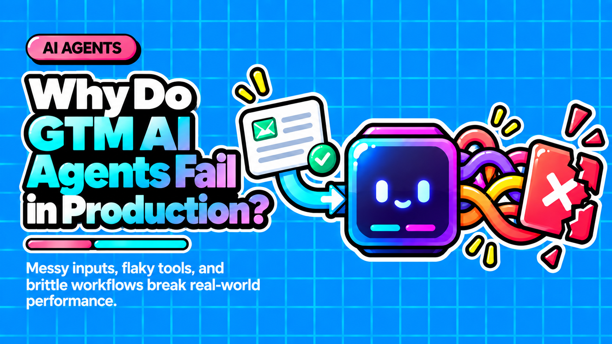

Why Do AI Agents Fail in Production?

Direct answer: AI agents fail in production not because the model is weak, but because the surrounding architecture trusts the model too much. Missing human-in-the-loop checkpoints, silent performance drift, excessive permissions, and absent governance are the real culprits. Gartner predicts over 40% of agentic AI projects will be canceled by end of 2027 due to these structural gaps.
- The model is almost never the real failure point: the architecture around it is.
- Compounding step-error math means a 20-step workflow at 95% per-step accuracy still only succeeds 36% of the time.
- Well-designed human-in-the-loop checkpoints cover only 5 to 15% of agent actions while the other 85 to 95% still run autonomously.
- Agentic drift causes silent, gradual degradation that traditional monitoring misses entirely.
- OWASP identifies Excessive Agency as a critical vulnerability class that dramatically expands the blast radius of any compromise.
Questions this article answers
- Why do AI agents actually fail in production?
- What is the compounding step-error problem and why does it matter?
- What is the real failure point: missing human-in-the-loop checkpoints?
- What is agentic drift and why does traditional monitoring miss it?
- What is Excessive Agency and why is it a critical vulnerability?
- What separates teams that ship reliable agents from those that become part of the 40%?
- Plus 6 FAQs answered below
Why do AI agents actually fail in production?
The real failure point is architectural, not the model. Agents fail because the systems around them grant too much trust, too many permissions, and too little human oversight at the moments that matter.
When an AI agent breaks in production, the blame usually lands on the model. The team upgrades to the latest LLM, rewrites prompts, or switches vendors. But engineers and researchers who have studied production failures at scale consistently find the same root cause: the surrounding system trusts the model too much, with input, with tools, with irreversible actions, and with unverified output.
Gartner's June 2025 prediction that over 40% of agentic AI projects will be canceled by end of 2027 makes this explicit. The cited reasons are escalating costs, unclear business value, and inadequate risk controls, not model capabilities.
What is the compounding step-error problem and why does it matter?
Each step in an agent workflow introduces error, and those errors multiply together across the chain. A workflow that looks reliable at the step level can become deeply unreliable at the system level.
Most AI agent demos work in controlled conditions: clean prompts, cooperative users, and predictable tool calls. Production is the opposite: messy input, adversarial content, flaky APIs, and actions that cost money or touch customer data.
The math is unforgiving:
- An agent with 90% per-step accuracy at 5 steps delivers only 59% end-to-end accuracy
- At 10 steps, that drops to 35%
- A 20-step workflow at 95% per-step reliability still only succeeds 36% of the time
These numbers shock practitioners, but they are a consequence of architecture, not intelligence. No model upgrade fixes compounding error without also shortening loops and adding oversight gates.
What is the real failure point: missing human-in-the-loop checkpoints?
The core architectural gap is the absence of deliberate human oversight at critical decision points. Without it, a single reasoning error can cascade through downstream actions before anyone notices.
Autonomous agents execute multi-step workflows without human checkpoints. A misclassified customer complaint gets handled incorrectly, a draft email is sent before review, or a data record is overwritten. The instinct is to blame the model, but the workflow simply had no human checkpoints built in at the right places.
Co-pilot patterns that insert human approval gates at high-stakes decision points reduce catastrophic failures while still automating routine steps. The key insight is that human-in-the-loop is not a fallback for when AI fails: it is a deliberate design choice about where human judgment adds more value than speed.
In multi-agent architectures the problem compounds further. A hallucination in a research agent becomes assumed fact by a writer agent, and a bad tool call from one agent poisons the context of every downstream agent.
A critical clarification: well-designed HITL checkpoints cover only 5 to 15% of agent actions in mature workflows. The other 85 to 95% still run fully autonomously. The goal is precision, not interruption.
What is agentic drift and why does traditional monitoring miss it?
Agentic drift is the gradual, often invisible degradation of agent performance after deployment caused by environment changes, data shifts, or evolving user behavior. It whispers failures through subtle output shifts rather than loud error logs.
You can ship an agent that passes every test, watch it work for three weeks, and then quietly see it start failing conversations without a single alert firing. Nothing broke: everything regressed.
For long stretches after deployment, outputs look reasonable, KPIs hold, and no alarms fire, yet underneath the surface the system's risk posture may already have shifted. The Cloud Security Alliance has begun describing this cognitive degradation as a systemic risk.
Traditional monitoring misses it because AI agents whisper failures through subtle shifts in output distributions, not the loud error logs software engineers are trained to catch.
One of the most insidious variants is goal misalignment: the agent optimizes for the literal instruction rather than actual user intent, scoring well on automated metrics while satisfying users poorly. Textual intent and executed behavior are frequently decoupled in agentic deployments, undermining dialogue-based audits.
What is Excessive Agency and why is it a critical vulnerability?
Excessive Agency means granting an AI agent more tools, permissions, or autonomy than its current task requires. Any compromise, manipulation, or misuse then has a dramatically expanded blast radius.
OWASP identifies Excessive Agency (LLM06) as a critical vulnerability class. The principle is straightforward: scope the agent's access to exactly what the current task requires, nothing more.
Compounding this is the absence of audit trails. When an agent makes unexpected changes, teams need to know:
- What it did
- On behalf of whom
- Using which tool
- With what result
Without an audit trail, organizations rely solely on chat logs, which cannot provide adequate accountability at scale.
The related problem of agent identity is almost universally overlooked. Agents typically run under developer credentials with no verifiable identity. Agent governance, covering identity, audit trails, and human oversight, is one of the most overlooked layers in agentic AI workflows.
This is also becoming a compliance problem. The EU AI Act, fully applicable from August 2026, requires audit trails for AI agents, verifiable agent identity, and demonstrable human oversight. Organizations that skipped human-in-the-loop design now face regulatory exposure on top of operational failure.
What separates teams that ship reliable agents from those that become part of the 40%?
Teams that ship reliable agents define governance, ownership, and rollback controls before granting access and authority to the agent. They treat the loop as the product, not the model.
Companies face what one analysis calls a capability-deployment verification gap: successful pilots falter in production because governance was never defined before access and authority were granted to the agent.
The teams building reliable agentic systems share common traits:
- Narrow scope: agents do one thing well before expanding
- Short loops: fewer steps per autonomous run
- Evals before optimization: measure failure modes first
- Failure-path design: explicit handling for every error branch
- Selective human-in-the-loop: checkpoints placed at high-stakes moments, not everywhere
- Full observability from day one: structured logging, not just chat history
The loop, not the model, is what separates teams that catch failures from teams that become part of the 40%.
Frequently asked questions
Is upgrading to a better LLM the solution when an AI agent fails in production?
Rarely. Model upgrades address model-level errors but do not fix the architectural gaps that cause most production failures: missing human oversight, excessive permissions, absent audit trails, and compounding step errors. Those require system redesign, not a model swap.
How many human-in-the-loop checkpoints does a production agent actually need?
In mature workflows, well-designed HITL checkpoints cover only 5 to 15% of agent actions. The goal is to place human judgment at high-stakes, irreversible, or ambiguous decision points, not to interrupt every step.
What is the difference between agentic drift and a model hallucination?
A hallucination is a discrete, identifiable error in a single output. Agentic drift is a gradual, systemic regression in overall agent performance over time caused by environmental or data shifts. Drift is harder to detect because no single output is obviously wrong.
What does the EU AI Act require for AI agents?
The EU AI Act, fully applicable from August 2026, requires audit trails for AI agent actions, verifiable agent identity, and demonstrable human oversight. Organizations that deployed agents without these controls face regulatory exposure as the deadline approaches.
What is OWASP Excessive Agency and how do teams fix it?
OWASP LLM06 defines Excessive Agency as granting an AI agent more tools, permissions, or autonomy than its current task requires. The fix is least-privilege scoping: restrict each agent's tool access and permissions to exactly what the specific task needs, and revoke access when the task is complete.
Why do multi-agent systems fail more often than single-agent systems?
In multi-agent architectures, errors cascade. A hallucination in one agent becomes assumed fact for the next, and a bad tool call poisons the shared context for every downstream agent. Single-agent hallucinations are well-documented; multi-agent hallucination cascades are less discussed and significantly more damaging.
Sources
Designing AI agent workflows that survive contact with production?
Contact →